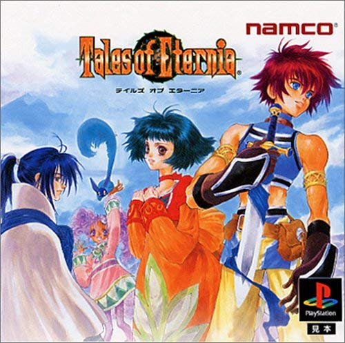

テイルズオブエターニア
 2000年11月30日発売プラットフォーム：PS , PSP
シリーズ第3作目。
本作が最後のPSでのマザーシップタイトルとなる。
前作や初代リメイクではキャラクターが2等身であったが、本作から3等身に変更された。マップ上で昼夜の概念が存在し、昼夜で敵との遭遇率や種類が変わる、マップ上でキャンプをすることが出来るなどの新要素も追加されている。また、料理機能も追加されており、食材とレシピを入手することでキャラクターが料理を作れるようになった。戦闘では“秘奥義”という必殺技システムが追加され、演出面でも進化をしていった。これらグラフィックの進化やメインストーリー部分のフルボイス化によって、本作はCD3枚組という大ボリュームの作品となった。
本作はストーリー上で“メルニクス語”という架空言語が登場する。登場人物の一人は当初この言語で話しており、プレイヤー／キャラクター共に何を話しているのか分からないという状況に陥る。ストーリーを進めていくと意思疎通が出来るようになるので、世界観を味わうためのいい味付けになっていると考える。以降の作品で独自の言語が使われることはあまりなかったが、ゲーム内で使われるプレイヤーが読む必要性のない文字などが独自のものになっていることがあり、部分的に受け継がれていると言ってもいいだろう。
本作はポケットステーションとの連帯、アニメやオンラインゲームなど前作までとは違ったメディア展開をした作品でもある。評価は賛否あるものの、これらが現在のテレビアニメ、ソーシャルゲームへの進出につながると思うと、感慨深くもある。